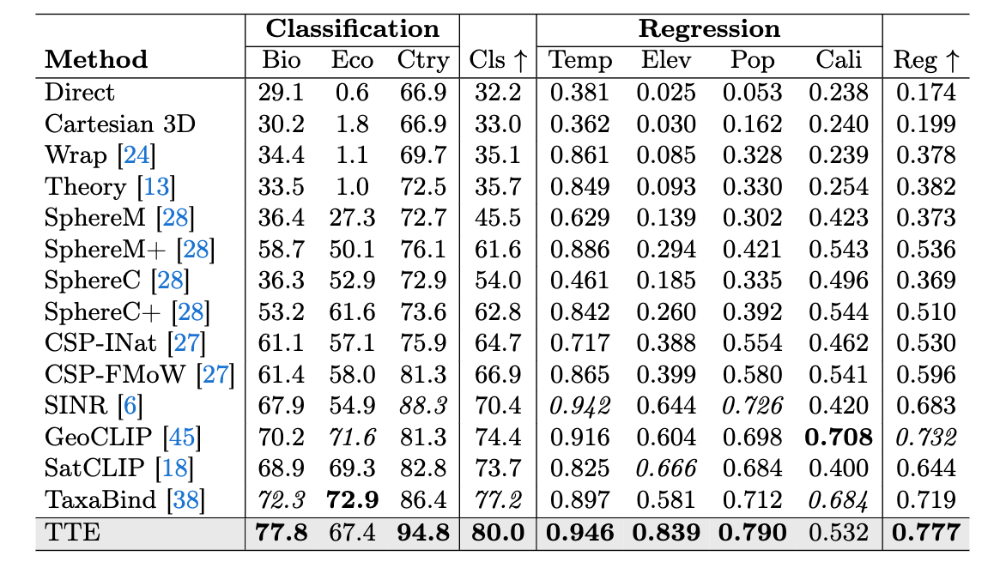
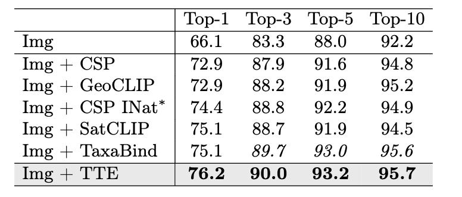
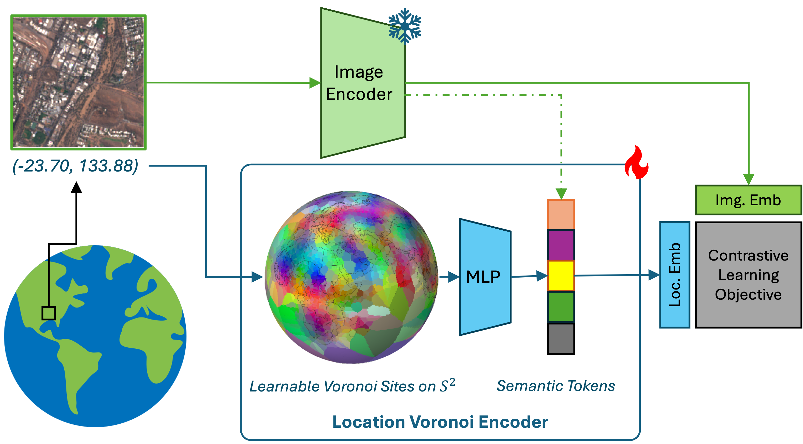
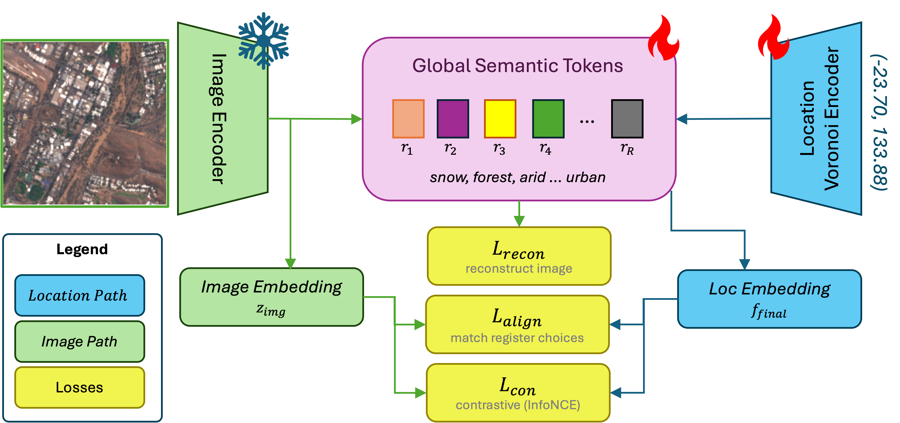
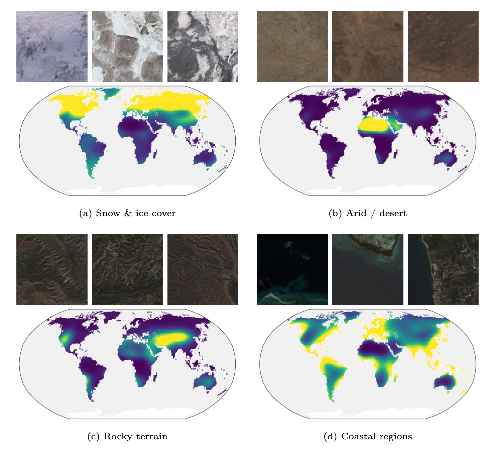

Learnable Spherical Voronoi Partitions for Location Encoding
TTE places thousands of learnable Voronoi sites on the sphere and lets them migrate during contrastive training toward visually discriminative regions. Press play to watch the partition form; drag to spin the globe.
TL;DR: TTE is a location encoder that uses a learnable Spherical Voronoi partition to concentrate representational capacity where it is needed, and global semantic tokens to bridge local spatial structure and global semantic understanding, setting a new state of the art for location encoders.
Geolocation encoders map geographic coordinates to learned representations that capture visual and non-visual characteristics from a latitude–longitude pair alone. Existing approaches project coordinates onto fixed bases (e.g., spherical harmonics), allocating representational capacity uniformly across the globe, devoting equal resources to the open ocean and to a developing city.
We introduce Tessellating the Earth (TTE), a location encoder built from learnable Spherical Voronoi partitions that concentrates representational capacity where it is needed, in a fully differentiable, end-to-end manner. Each Voronoi site carries its own embedding and migrates during training toward discriminative areas. To bridge local spatial structure and global semantic understanding, we introduce global semantic tokens: shared learnable concept tokens that distill semantic knowledge from satellite imagery into a compact vocabulary the location encoder can reference at inference, letting geographically distant sites covering similar environments share semantics.
TTE sets a new SOTA for location encoders on a variety of geospatial benchmarks.


A coordinate is mapped onto the sphere and soft-assigned to the learnable Voronoi sites; the resulting embedding attends over a shared set of global semantic tokens. A frozen ViT encodes the co-located satellite image and supervises the tokens during training; at inference only the location pathway runs.


Shared, learnable concept tokens distill the pretrained image encoder's semantic knowledge into a compact vocabulary the location encoder can reference at inference — when no imagery is available — so distant sites covering similar environments share representational capacity.

@inproceedings{cher2026tte,
title = {Tessellating the Earth: Learnable Spherical Voronoi
Partitions for Location Encoding},
author = {Cher, Daniel and Iqbal, Hamza and Xing, Eric and Wei, Brian and Jacobs, Nathan},
booktitle = {European Conference on Computer Vision (ECCV)},
year = {2026}
}